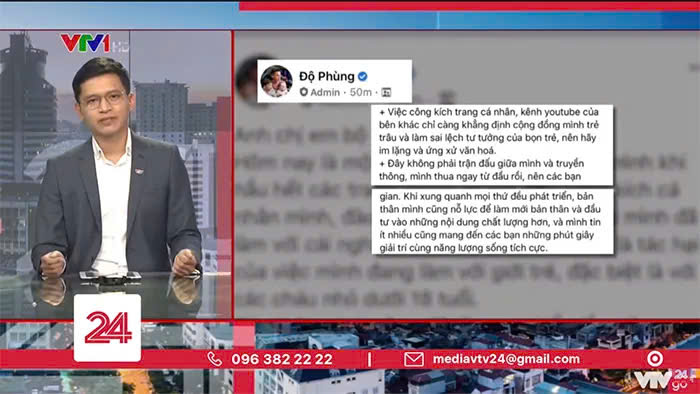

LƯU Ý: Đây chỉ là 1 trang web tôi làm cho vui và để nộp bài tập thế nên xin đừng ai leak ra không tôi sợ ăn phốt lắm
1. Tiểu sử về Độ Mixi
Độ Mixi tên thật là Phùng Thanh Độ, sinh năm 1989 tại thành phố Cao Bằng. Trước khi gắn bó với nghề sáng tạo nội dung, anh từng theo học thiết kế và làm việc trong ngành du lịch. Bước ngoặt đến với anh vào khoảng năm 2016–2017 khi bắt đầu livestream các tựa game như CS:GO, PUBG hay GTA V. Không xuất phát từ vị trí tuyển thủ chuyên nghiệp, anh vẫn chinh phục người xem bằng sự duyên dáng, mộc mạc mang đậm chất vùng núi phía Bắc cùng những câu chuyện đời thường chân thật. Dần dà, anh được xếp vào nhóm "Tứ hoàng streamer" của Việt Nam bên cạnh Xemesis, PewPew và ViruSs, xây dựng kênh MixiGaming vững mạnh và quy tụ cộng đồng "Bộ tộc Mixi" đông đảo. Không dừng lại ở màn hình máy tính, anh còn mở rộng sang vlog ẩm thực, du lịch, gia đình và tích cực tham gia các hoạt động thiện nguyện hướng về vùng cao.
Sức hút lớn nhất của Độ Mixi nằm ở sự chân thật, gần gũi và khả năng kết nối cộng đồng. Anh tạo cảm giác giống một người anh chia sẻ chuyện đời hơn là một ngôi sao giải trí xa cách, đồng thời tận dụng tốt sức ảnh hưởng để lan tỏa nhiều hoạt động thiện nguyện tích cực.
2. Những tranh cãi và Drama xoay quanh

Tuy sự thành công của anh là 1 điều đáng để ngưỡng mộ và học hỏi thế nhưng đi cùng với nó là không ít tranh cãi xoay quanh hình ảnh của anh. Lối trò chuyện thẳng thắn, sử dụng nhiều tiếng lóng và cách diễn đạt suồng sã đôi khi khiến anh vấp phải ý kiến cho rằng thiếu chuẩn mực, nhất là khi có nhiều khán giả trẻ theo dõi. Tên tuổi của anh từng xuất hiện trong các bản tin truyền hình, báo chí bàn về văn hóa ứng xử và ngôn từ trên không gian mạng, tạo ra những cuộc tranh luận trái chiều. Bên cạnh đó, các hoạt động quảng cáo, hợp tác thương mại hay cách hành xử thiếu kiềm chế của một bộ phận fan quá khích cũng từng khiến hình ảnh của anh bị đặt dưới lăng kính soi xét khắt khe hơn.
1 dẫn chứng tiêu biểu cho việc này là vào ngày 17/9/2020,khi chương trình Chuyển động 24h (VTV24) phát sóng phóng sự phản ánh thực trạng một số streamer sử dụng ngôn từ thiếu chuẩn mực, nói tục, chửi bậy trên mạng xã hội và tác động của nó tới khán giả trẻ. Trong phóng sự này, hình ảnh của Độ Mixi khi đang livestream được sử dụng làm ví dụ minh họa
3. Đánh giá tổng kết
Nhìn một cách khách quan, Độ Mixi là một gương mặt tiêu biểu cho sự chuyển mình của nghề sáng tạo nội dung số tại Việt Nam, nơi sự chân thật và gần gũi đã giúp anh xây dựng được một cộng đồng khán giả gắn kết cùng nhiều hoạt động thiện nguyện ý nghĩa. Tuy nhiên, đi kèm với sức ảnh hưởng lớn là những áp lực về chuẩn mực công chúng, khiến nét tính cách thẳng thắn, suồng sã vốn làm nên thương hiệu của anh đôi khi trở thành con dao hai lưỡi trong các tranh cãi về ngôn từ và hành vi cá nhân. Dẫu không phải hình mẫu hoàn hảo, hành trình vừa giữ bản sắc riêng vừa học cách tiết chế để trưởng thành cùng khán giả đã tạo nên sức sống bền bỉ và giá trị riêng biệt cho tên tuổi của anh.